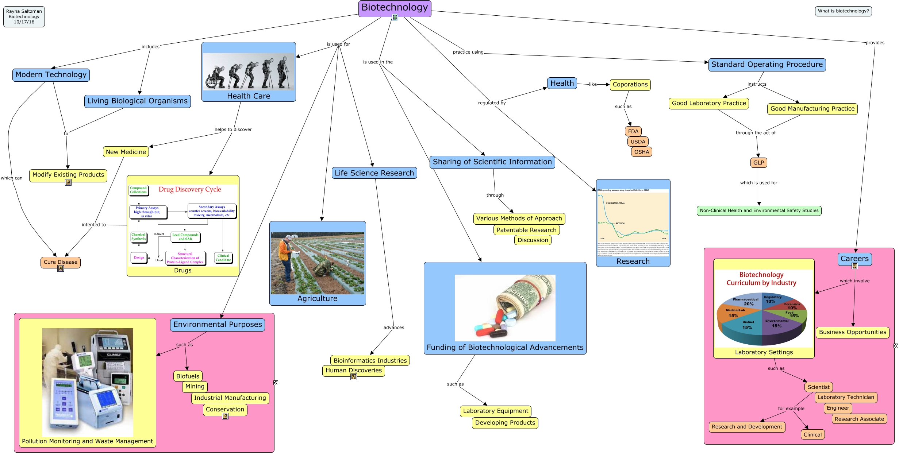

WARNING:
JavaScript is turned OFF. None of the links on this concept map will
work until it is reactivated.
If you need help turning JavaScript On, click here.
This Concept Map, created with IHMC CmapTools, has information related to: biotechnology, Scientist for example Clinical, Biotechnology is used in the Funding of Biotechnological Advancements, Biotechnology provides Careers, Biotechnology regulated by Health, GLP which is used for Non-Clinical Health and Environmental Safety Studies, Funding of Biotechnological Advancements such as Laboratory Equipment, Environmental Purposes such as Biofuels, Drugs intented to Cure Disease, Health Care helps to discover Drugs, Biotechnology practice using Standard Operating Procedure, Biotechnology includes Living Biological Organisms, Good Manufacturing Practice through the act of GLP, Biotechnology is used for Health Care, Environmental Purposes such as Pollution Monitoring and Waste Management, Careers which involve Business Opportunities, Good Laboratory Practice through the act of GLP, Biotechnology is used for Environmental Purposes, Biotechnology is used for Life Science Research, Modern Technology which can Cure Disease, Standard Operating Procedure instructs Good Laboratory Practice
